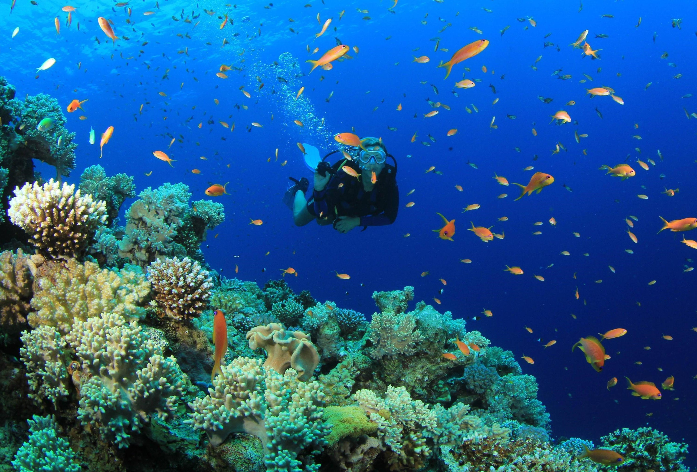

Scuba diving brings your imagination to life. Scuba diving is a must when paying a visit to India’s most vibrant and happening coastal states, Goa. Money spent in diving at Grand Island is worth every penny as the experience gained is priceless. The Scuba diving in Goa offer the best experience at a very attractive price and prioritize safety. For all those looking to get high, go scuba diving and feel the high like never before. All the adventurous souls out there who are willing to go out of their comfort zone to experience the magnificence that the world has to offer, scuba diving is for you. Satiate your souls with the incredible scuba diving experience which no alcohol or drug can provide.
Contact us if you need a guide
Enjoy your trip:)